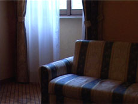

|
301
Jean-Claude Rousseau | F 2008 | 18 min.
Material: HDV
Format: DigiBeta
Original language: French
Camera: Jean-Claude Rousseau
Sound: Jean-Claude Rousseau
Editing: Jean-Claude Rousseau
Production: Jean-Claude Rousseau
Print/Sales: Jean-Claude Rousseau
German Premiere
301 is the number of a hotel room, in which Rousseau is waiting for something – or someone. Rousseau’s film demonstrate how public places turn into private ones and yet remain strange in the course of it.
Jean-Claude Rousseau, born in 1946 in Paris. In New York of the seventeens he descovered the avant-garde cinema. Back to Paris, he was totally dedicated to arts. In 1983 he shot his first short film on super 8. Since then his work is shown in numerous exhibitions and on international festivals, among others at the Centre Georges Pompidou, Paris, the New York University, the Cinémathèque royale, Belgium and on the festivals of Locarno, Vienna, Turin and Marseille. 2001 he got a hommage of his complete work at the Mostra of Venice. UNDERDOX 04 is presenting his films in German premiere.
Films: Jeune femme à sa fenêtre lisant une lettre 1983 | Venise n'existe pas 1984 | Keep in touch 1987 | Les antiquités de Rome 1989 | La Vallée Close 1995 | Lettre à Roberto 2002 | Juste avant l’orage 2003 | Comme une ombre légère 2005 | Une vue sur l'autre rive 2005 | Trois fois rien 2006 | La nuit sans étoiles 2006 | Faux départ 2006 | Deux fois le tour du monde 2006 | De son appartement 2007 | 301 2008 | Série noire 2009
back
|